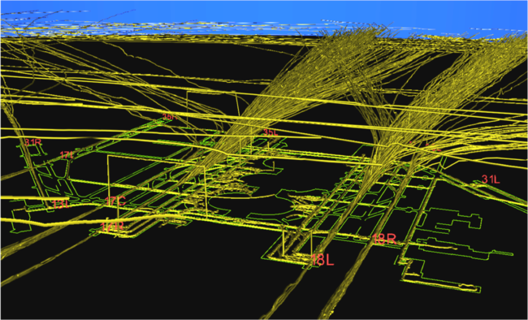

Visualizing Traffic at DFW Airport
Below is a snapshot of aircraft activity at the DFW airport over a period of several hours. It was rendered by Kitware’s Visualization Toolkit (VTK) on an Solaris workstation using raw surveillance data from the aircraft transponders (ADS-B). The green lines on the surface represent the airport, and the gold paths are tracks of aircraft and vehicles. The airport is in a south configuration, with planes arriving from the north and departing to the south. Note the “goal post” at the left, where surveillance reported a vehicle in the air for some amount of time when in fact it was clearly on the ground. The image was captured while working on an FAA project called Runway Status Lights.
